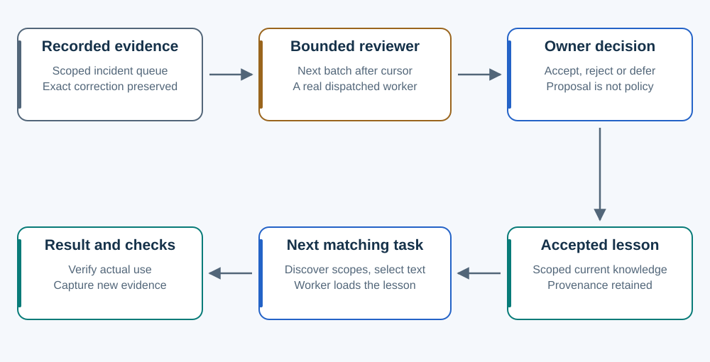

Learning needs evidence and execution.
The current Director does not magically know every past correction. The loop makes a bounded part of that work explicit.

The default active-session loop
Meaningful corrections enter a scoped incident queue. At meaningful closure, three pending incidents make one review due when permitted capacity exists. That count batches spending; the incidents need not share a cause.
The owner dispatches a real bounded reviewer with the next batch after the saved cursor. Default batches contain at most five incidents and 12,000 encoded bytes. Saving commits the review output before advancing its cursor. Failed or interrupted work must leave unreviewed evidence available.
The reviewer proposes; the owner evaluates. Only accepted current knowledge appears in matching task/path/audience selection. A later worker must load it, use it and return checks. If no execution route is available, review stays visibly pending.
An explicit instruction applies now
A user-supplied scoped rule need not wait for three incidents or a reviewer. Preserve its exact source and record the already authorized rule within its scope.
Review consumes model time and context. The helper also parses its local state file, so bounded model-facing context does not make storage work constant.